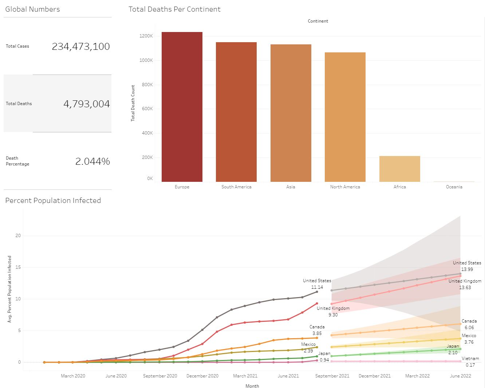
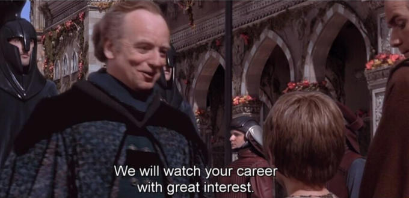

I'm a data analyst who helps people feeling uncertain due to lack of information make informed decisions based on data so they can have better confidence in their choices and judgments. Graduated in June 2020 at the University of California, Riverside with a BA in Economics. Below are some interesting projects I have been working on and learning from.
In this project, data on the artist Tom Misch was accessed and extracted from the Spotify Web API and stored into a csv file and pandas dataframe. The data was then cleaned, analyzed, and prepared to be made into a series of visualizations that showed a story of how Tom Misch's music on Spotify has progressively evolved with each of his releases.

Udemy data is cleaned and insights are visualized using Python. Analyzed correlation across columns, built a linear regression model, investigated outliers, and identified important business metrics.
Explored dataset in MSSQL and investigated death and infection rates, including total death and infection count in Covid-19 data to prepare for the development of a dashboard in Tableau Public.

Visualized data taken from SQL queries exploring and extracting insights on Covid-19 data into a dashboard.

Guided project from Dataquest.io; cleaned data and performed EDA. This was one of the very first data projects I have completed and although it wasn't the best project, I learned a lot about coding and thinking like a data specialist. It was also very fun to work on this project since I am a huge fan of Star Wars, especially the Prequel Trilogy and the Mandalorian series.